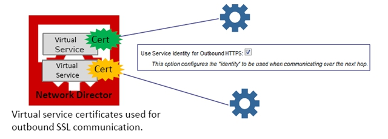
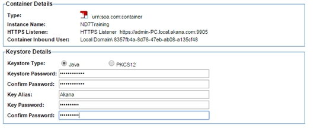

layout: page
title: Implement 2-Way SSL using Policy Manager
description: Learn how to use Policy Manager to implement mutual authentication using an SSL (Secure Socket Layer) Certificate.
product: ag
category: learn
sub-nav-class: Mediation
weight: 15
type: page
nav-title: Implement 2-Way SSL using Policy Manager
How To Implement 2-Way SSL Using Policy Manager
Learn how to use Policy Manager to implement mutual authentication using an SSL (Secure Socket Layer) Certificate to authenticate either your business' legal name and location or, alternatively, just your domain.
Table of Contents
SSL Overview
Identity Certificates
When a user visits your secure site, your web server will send a copy of your SSL (Secure Socket Layer) certificate to the user's web browser. The information in the certificate will always include your web site's domain name, such as www.yourdomain.com and the name of the certificate authority (CA) that issued the certificate; sometimes it will also include your company's information. This lets the browser know that the web site it's connecting to is the correct web site, and not an impostor or phishing site. This is authentication.
There are two types of SSL Authentication: full-authentication and domain-authentication.
Fully-Authenticated SSL Certificates
A fully-authenticated SSL certificate will contain information about your domain name and the legal name of your business organization. It will also contain the geographical location information for the city, state, and country where your business is registered to do business. Before a Certificate Authority issues this certificate, the applying business has to fax in supporting proof-of-organization documents to prove its identity. Fully-authenticated websites will typically have a green bar before their domain name.

Domain-Authenticated SSL Certificates
A domain-authenticated certificate will vouch for your domain only. It will not include any information about your company nor its location in the certificate (except for the two-letter country code). Domain-authenticated websites will have a lock icon before their name.
back to top
2-Way SSL Prerequisites
In order for Policy Manager to properly implement mutual authentication, the following requirements must be met inside Policy Manager:
- You must have an HTTP Security Policy with the Require Client Certificate Authentication option enabled and attached to the service you want.
- You must have an Authentication Policy that will check that the correct certificate is presented
- You must set your HTTPS Inbound Listener on your Network Director to Accept Client Certificates.
- Your HTTPS Inbound Listener must have a set of PKI Keys and an X.509 Certificate.
back to top
Assumptions
This topic implements mutual authentication with an anonymous contract. It allows any user in your Workbench with the correct certificate attached to access the service.
back to top
Create HTTP Security Policy
The purpose of the HTTP Security Policy is to require a certain credential from the client. In this case we want to require the client to send a certificate as their credentials, which will be validated by the authentication policy in the next step. The HTTP Security Policy must be attached to the virtual service of any service you would like to implement mutual authentication on.
- Go to [Organization Containing Service] > Polices > Operational Policies.
- On the Policies Summary, click Add Policy and create an HTTP Security Policy.
- On the HTTP Security Policy Details portlet, click Modify.
- Click Next on the Specify HTTP Authentication Options screen.
- On the Specify Client Certificate Authentication screen, click the Require Client Certification Authentication checkbox and select the Use clients X.509 certificate from the SSL context radio button.
- Under Subject Category, select End-User and click Finish

- In the Policy Workflow actions portlet, click Activate Policy.
- Attach this policy to the service you want to implement mutual authentication on.
- Navigate to [Your Virtual Service].
- In the Policy Attachments portlet, click Manage in the Operational section.
- Navigate the Policy Hierarchy, select the newly created HTTP Security Policy and click Apply.
back to top
Create Authentication Policy
The purpose of the authentication policy is to ensure that the correct certificate is received. The HTTP Security Policy only requires that a certificate be sent by the client, but that could be any certificate. This policy must also be attached to the service you want to implement mutual authentication on.
- Go to [Organization Containing Service] > Polices > Operational Policies.
- On the Policies Summary, click Add Policy and create an Authentication Policy.
- On the Authentication Policy portlet, click Modify.
- On the Modify Authentication Policy pop-up, select the End User radio button.
- In the Domains section, select any domains you wish to have access to, use >> to move them to the right panel, and click Apply.

- In the Policy Workflow actions portlet, click Activate Policy.
- Attach this policy to the service you want to implement mutual authentication on.
- Navigate to [Your Virtual Service].
- In the Policy Attachments portlet, click Manage in the Operational section.
- Navigate the Policy Hierarchy, select the newly created Authentication Policy, and click Apply
back to top
Configure Outbound HTTPS Support
The Network Director supports Outbound HTTPS to the physical service/endpoint using the following two methods:
Outbound HTTP Certificate Configured on the Virtual Service (Suggested Method)
If you would like to use different outbound certificates for different services, you can accomplish this by attaching them to a particular virtual service.

On the Manage Outbound Identities page, check the Use Incoming Identities as Outbound Identities box, as shown above. When you check this box, the platform uses the HTTP client's mutual SSL certificate. This allows using different client certificates for each service. If the box isn't checked, the listener certificate is used.
- In Policy Manager Workbench, select the virtual service you would like to attach an Outbound Certificate to.
- On the Service Details screen, click Manage PKI Keys from the Actions portlet.
- On the Select Key Management Option screen. Two options can be used.
- Option 1: Generate Your Own PKI keys and an X.509 certificate. Use this option if you do not have your own certificate and PKI keys. Policy Manager will create them for you and display the information after. Note that Policy Manager must be configured as a Certificate Authority in order to complete the following steps.
- Select Generate PKI Keys and X.509 Certificate, and click Next.
- Select the key length value (2048 is recommended).
- Fill out Certificate Details and click Finish.
- Option 2: Import your already existing certificate and keys. Use this option if you have purchased a certificate from a CA and would like to use it.
- Select Import PKI Keys and X.509 Certificate and click Next.
- Specify the Keystore Type.
- Specify the Keystore Path.
- Enter the password for the selected keystore.
- Click Load Aliases.
-
Select the Key Alias you would like to import and click Finish.

- From the Details page for the service, from the Actions portlet, click Manage Outbound Identities. Check the Use Service Identity for Outbound HTTPS box, as shown in the diagram at the beginning of this procedure. Click Finish.
Outbound HTTPS Certificate Configured on the Network Director Container
This optional method can be thought of as a “default” certificate that is sent with every request made by services hosted on the Network Director. It is configured in the Details tab in the Outbound Configuration portlet.

- In Policy Manager Workbench, go to Organization Tree > Containers and select the Network Director container instance the service is hosted on.
- In the Outbound Configurations portlet, click Manage PKI Keys.

- On the Select Key Management Option screen, select from two options:
- Option 1: Generate Your Own PKI keys and an X.509 certificate. Use this option if you do not have your own certificate and PKI keys. Policy Manager will create them for you and display the information after. Note that Policy Manager must be configured as a Certificate Authority in order to complete the following steps.
- Select Generate PKI Keys and X.509 Certificate and click Next.
- Select the key length value (2048 is recommended).
- Fill out the Certificate Details and click Finish.
- Option 2: Import your already existing certificate and keys. Use this option if you have purchased a certificate from a CA and would like to use it.
- Select Import PKI Keys and X.509 Certificate and click Next.
- Specify the Keystore Type.
- Specify the Keystore Path.
- Enter the password for selected keystore.
- Click Load Aliases.
- Select the Key Alias you would like to import and click Finish.
back to top
Configure Inbound HTTPS Support
There are two things to do in order to enable client certification:
- Set your HTTPS inbound listener to accept client certificates.
- Use Policy Manager to create a client certificate and add it to your store of Trusted CA Certificates.
Create an HTTPS Inbound Listener
Note: If you have an existing HTTPS listener you want to use, you can just modify it under Actions > Modify Container Listener and change its client certificate requirements.
- In the Inbound Listeners portlet, select the Network Director container instance you plan to host the service on.
- Click Add Container Listener.

- From the drop-down, select HTTPS and click Next.
- From the Client Certificates drop-down, select Accept Client Certificates.
- Fill out the rest of the fields to your preference and click Finish.

- Go to Actions > Manage PKI Keys.
- Create or import PKI Keys and certificate for HTTPS Inbound Listener.

- On the Select Key Management Option screen, select from two options.
- Option 1: Generate Your Own PKI keys and an X.509 certificate. Use this option if you do not have your own certificate and PKI keys. Policy Manager will create them for you and display the information after. Note that Policy Manager must be configured as a Certificate Authority in order to complete the following steps.
- Select Generate PKI Keys and X.509 Certificate and click Next.
- Select the key length value (2048 is recommended).
- Fill out the Certificate Details and click Finish.
- Option 2: Import your already existing certificate and keys. Use this option if you have purchased a certificate from a CA and would like to use it.
- Select Import PKI Keys and X.509 Certificate and click Next.
- Specify the Keystore Type.
- Specify the Keystore Path.
- Enter the password for the selected keystore.
- Click Load Aliases.
- Select the Key Alias you would like to import and click Finish.
back to top
Add Trusted Client Certificates to Policy Manager
Add any additional trusted client certificates to the Trust CA Store in Policy Manager.
- Go to Configure > Security > Certificates > Trusted CA Certificates.
- To import the certificate for the client, click Add Trusted CA Certificate and click Apply.
- Go to Security > Users.
- Assign PKI Keys and X.509 certificate to desired user(s).
- Select user(s).
- Click Manage PKI Keys.
- Import PKI Keys and X.509 Certificate and click Next.
- Select a valid .jks file and click Finish.
back to top
Test
You can test to be sure that mutual authentication is working properly by testing it with SOAPUI. You just need to export the Private Key and X.509 Certificate from the HTTPS Inbound Listener and add them to your SOAPUI.
- Navigate to [Your Network Director].
- Locate your HTTPS Listener created earlier in this guide under Inbound Listeners portlet.
- From the Actions drop-down, select Manage PKI Keys.
- Under Key Management Options, select Export Private Key and X.509 Certificate and click Next.
- Confirm that Keystore Type is set to Java.
- Fill out the Keystore Details fields and click Finish.

- Inside SOAPUI, go to File > Preferences > SSL Settings.
- Inside the Keystore field, browse to where you saved the exported file.
- Under KeyStore Password, enter the same password you made when you exported the keys and click OK.
- SOAPUI should now be able to successfully test services with mutual authentication.
back to top